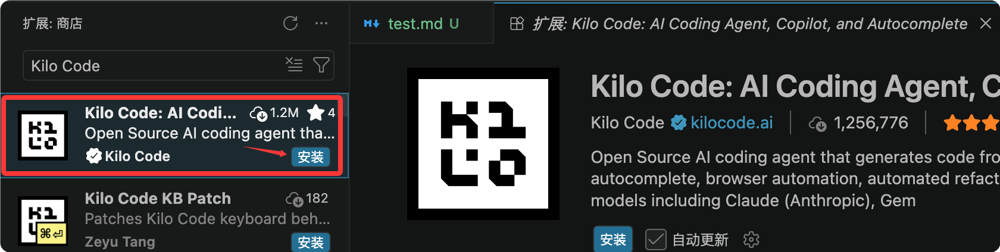
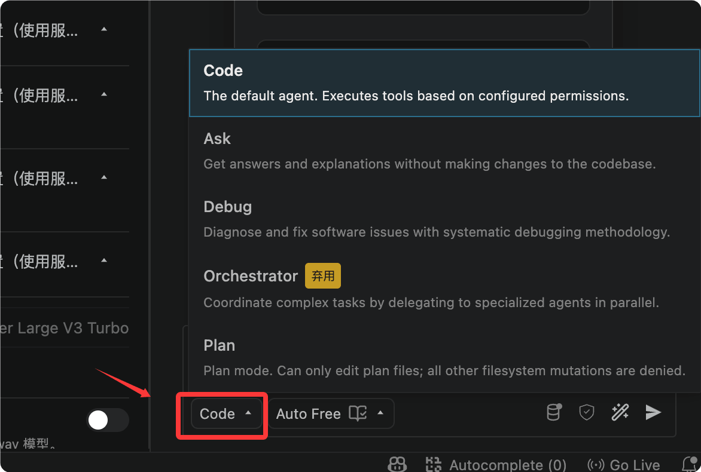

Kilo Code 入門チュートリアル
Kilo Code は、VS Code、JetBrains、またはコマンドライン上で動作するオープンソースの AI プログラミング Agent です。500 以上の AI モデルをサポートし、現在 300 万以上の開発者ユーザーを持ち、40 兆以上の Tokens を処理しています。
Kilo Code はあなたの既存の IDE（VS Code、JetBrains）に組み込まれるオープンソースの AI プログラミング Agent です。
Kilo Code は新しいエディターフォークではありません。ツールもショートカットキーもプラグインも変更する必要はありません。既存の開発環境でそのまま AI Agent 機能を利用できます。
公式サイト：https://kilo.ai/
他のAIツールとの違い
| 項目 | Cursor / Windsurf | GitHub Copilot | Kilo Code |
|---|---|---|---|
| インストール方法 | 新しいエディターへの切り替えが必要 | VS Code プラグイン | VS Code / JetBrains プラグイン |
| ソースコード公開 | クローズドソース | クローズドソース | オープンソース（MIT ライセンス） |
| モデル選択 | 限定的 | 限定的 | 500+ モデル、いつでも切り替え可能 |
| 価格設定 | サブスクリプション制、割増あり | サブスクリプション制 | 割増なし、モデルプロバイダーの料金をそのまま適用 |
| 自前の API キー | 可能 | 不可 | 可能（BYOK） |
| Agent モード | 基本 | 基本 | Code / Ask / Plan / Debug + カスタム |
| 並列 Agent | 无 | 无 | 対応（git worktrees 分離） |
コア機能の一覧
Kilo Code が提供する主な機能をすぐに確認できます。
-
マルチプラットフォーム対応：VS Code、JetBrains（IntelliJ、PyCharm、WebStorm など）、CLI、モバイルアプリ（iOS / Android）、Slack。
-
500+ モデル、割増なし：Claude、GPT、Gemini、Grok、DeepSeek、ローカルモデル……いつでも切り替え可能。モデルプロバイダーの定価で課金されます。
-
専門化された Agent モード：Code、Ask、Plan、Debug。各モードでツール権限が異なり、異なるタスク向けに最適化されています。
-
スマート補完：FIM（Fill-in-the-Middle）に基づくインラインコード提案。Tab キーで受け入れ。
-
ターミナルとブラウザー制御：Shell コマンドの実行、ブラウザー自動操作が可能。
-
Checkpoints（チェックポイント）：変更前に自動スナップショットを作成し、いつでも
/rollbackロールバックできます。 -
並列 Agent：git worktrees を使用して複数の Agent を同時に実行し、互いに干渉しません。
-
MCP マーケット：MCP サーバー統合を内蔵し、ワンクリックで GitHub、データベース、Slack などの外部サービスに接続。
-
完全オープンソース：MIT ライセンス。監査可能、Fork 可能、カスタマイズ可能。
インストール
Kilo Code は VS Code、JetBrains、CLI など複数のインストール方法に対応しています。以下でそれぞれ説明します。
VS Code プラグイン（推奨）
VS Code を開き、Ctrl+Shift+X（Windows/Linux）Cmd+Shift+X（macOS）プラグインマーケットを開きます。
検索Kilo Code、クリックインストール 。

コマンドラインからインストールすることもできます：
code --install-extension kilocode.Kilo-Code
インストールが成功したら、右上の Kilo Code アイコンをクリックするだけで使い始められます。一定の無料枠があります：

設定ページで自分のモデルを定義できます：

JetBrains プラグイン
JetBrains IDE（IntelliJ、PyCharm、WebStorm など）を開きます。
開くSettings → Plugins → Marketplace、検索Kilo Codeインストールし、IDE を再起動します。

CLI インストール（Linux/macOS）
ワンクリックインストールコマンド：
curl -fsSL https://kilo.ai/cli/install | bash
その他のインストール方法：
# npm 安装 npm install -g @kilocode/cli # Homebrew 安装（macOS/Linux） brew install Kilo-Org/tap/kilo # pnpm 安装 pnpm add -g @kilocode/cli # Arch Linux (AUR) 安装 paru -S kilo-bin
その他の VS Code 互換エディター
Cursor、Windsurf、VSCodium、Gitpod、Eclipse Theia などの VS Code 互換エディターは、Open VSX Registryインストールできます。

システム要件
VS Code 1.84.0 以降。
Windows ユーザーは、PowerShell がシステム PATH に追加されていることを確認する必要があります。
初回設定：モデルプロバイダーへの接続
プラグインをインストールしたら、VS Code サイドバーの Kilo Code アイコンを開き、ウェルカムページで設定を開始します。
方法1：Kilo アカウントを登録（最速）
直接登録app.kilo.aiアカウント。アカウント作成後は、Kilo Gateway500+ のモデルにアクセスできます。
対応モデルには GPT-5.5、Claude Opus 4.7、Claude Sonnet 4.6、Gemini 3.1 Pro Preview などが含まれ、プロバイダーの定価で課金され、追加料金はありません。
アカウント登録後、体験用の無料枠が一定額付与されます。
方法2：BYOK（自分の API キーを持ち込む）
すでにモデルプロバイダーのAPIキーをお持ちの場合は、直接設定できます：
Kilo Code のウェルカムページでクリックし、Use your own API key。
Provider ドロップダウンメニューでプロバイダー（Anthropic、OpenAI、OpenRouter、Google AI Studio など）を選択します。
APIキーを入力して保存します。
BYOK モードは完全に追加料金なし——Kilo はあなたのキーから一切差額を利益として得ません。
よく使うプロバイダー設定
| プロバイダー | 推奨用途 |
|---|---|
| Anthropic（Claude Sonnet 4.6） | アーキテクチャ設計、複雑な推論 |
| OpenAI（GPT-5.5） | コード生成、補完 |
| Google（Gemini 3.1 Pro） | 超大コンテキスト、ドキュメント分析 |
| OpenRouter | マルチプロバイダールーティングで、1つのキーでほぼすべてのモデルにアクセス |
| Ollama / LM Studio | 完全ローカル実行で、データがマシンから出ません |
DeepSeek 設定
プロジェクトディレクトリに入り、kilo を実行します：
cd /path/to/my-project
コマンドバーで入力し、/connectConnect Provider パネルを開き、deepseek を検索して DeepSeek を選択し、あなたの DeepSeek APIキーを入力します。
/models と入力モデルセレクターを開き、利用可能な DeepSeek モデルを選択します：
DeepSeek V4 Flash DeepSeek V4 Pro
最小構成：Agent に任せる
プラグインに入ったら、Agent に直接伝えます：
帮我配置 OpenAI 提供商，我的 API Key 是 sk-xxxx
Kilo Code には設定管理スキルが組み込まれており、Agent が自動的にkilo.jsonc設定ファイルを読み書きするため、手動で設定を編集する必要はありません。
最初のタスク：5分で始める
簡単なタスクを通して、Kilo Code の基本的なワークフローを素早く体験します。
Kilo Code を開く
VS Code サイドバーの Kilo Code アイコン（K の形）をクリックして、チャットパネルを開きます。
最初のタスクを送信
下部の入力ボックスに、自然言語でやりたいことを記述します：
创建一个名为 hello.txt 的文件，内容写 "Hello, Kilo!"
按 Enter送信します。
確認と承認
Kilo Code はリクエストを分析し、具体的な操作を提案します。
デフォルトでは、ほとんどのツールは自動承認ですが、Shell コマンドの実行、外部ディレクトリへのアクセス、機密ファイルの読み取り時のみ、手動での確認が必要です。
次のものが表示されます：
Agent の分析プロセス（トークン使用量がリアルタイム表示）。
具体的な操作手順（どのファイルを作成するか、何を書き込むか）。
実行結果。
反復的な改善
Kilo Code は反復的に動作し、1つのタスクを複数回の対話で完了できます：
第一轮：写一个 Python 函数，计算两个数的最大公约数 第二轮：加上类型注解和 docstring 第三轮：写单元测试 第四轮：重构成 class，支持多个数字的 GCD
各ラウンドで Agent は前のラウンドの続きから進めるため、背景を再度説明する必要はありません。
便利なショートカットキー
| 操作 | ショートカットキー |
|---|---|
| Kilo Code パネルを開く | サイドバーのアイコン |
| Agent モードを切り替え | Cmd+. / Ctrl+. |
| Agent モードを逆方向に切り替え | Cmd+Shift+. / Ctrl+Shift+. |
| Agent セレクターを切り替え | 入力/agents |
Agent モード：ツールを正しく選んで正しく実行する
Kilo Code は4つの組み込み Agent を提供し、各 Agent は異なるツール権限と動作戦略を持っています。
適切な Agent を選ぶと、効果が向上するだけでなく、トークンコストも節約できます。

code（デフォルト）
位置付け：全能のソフトウェアエンジニア。
ツール権限：完全アクセス——ファイルの読み取り、ファイルの書き込み、ターミナルコマンドの実行、ネットワーク検索、MCP サーバーの呼び出し。
適している用途：コード作成、機能実装、バグ修正、日常の開発。
切换方式：默认就是 code，或输入 /agents 选择
ask
位置付け：読み取り専用のテクニカルアドバイザー。
ツール権限：読み取り専用——ファイルの読み取りやcat/grep/git log読み取り専用コマンドの実行が可能で、書き込み操作は一切禁止です。。
適している用途：コードの理解、関数ロジックの説明、プロジェクト構造の探索、技術的概念の学習。
典型用法： "解释这个 useEffect 的执行顺序" "这个 SQL 查询会有性能问题吗？" "分析整个 src 目录的架构"
ask モードで大規模なコードベースを分析する場合、Agent が誤ってファイルを変更しないことを安心して任せられます。
plan
位置付け：テクニカルリーダー兼システムデザイナー。
ツール権限：読み取り専用 +.kilo/plans/ディレクトリ配下の計画ファイルへの書き込みが可能。
適している用途：システム設計、機能計画、アーキテクチャ決定、実装計画の策定。
典型用法： "设计一个多租户 SaaS 平台的数据库架构" "规划如何把单体应用拆分成微服务" "在写代码之前，先给我一个分页功能的实施方案"
ベストプラクティス：最初に plan モードで計画し、方針を確認してから code モードに切り替えて実装します。
debug
位置付け：問題を体系的に調査するエキスパート。
ツール権限：完全アクセス（code と同じ）。
適している用途：バグの追跡、エラーの診断、ランタイム問題の分析。
debug モードはより体系的なアプローチを取ります——コードを直接修正しようとするのではなく、まず分析し、範囲を絞り込み、それから修正します。
典型用法： "运行 npm test 后报错，帮我找出根本原因" "内存一直增长，帮我定位内存泄漏"
Agent の切り替え方法
次の3つの方法がすべて使えます：
チャット入力ボックスの横にあるAgent 選択ドロップダウンメニューをクリック。。
入力/agentsしてセレクターを起動。
按 Cmd+.（macOS）またはCtrl+.（Windows/Linux）で高速にループ切り替え。
途中でモデルを切り替える
Kilo Code はタスク実行中いつでもモデルの切り替えをサポートしており、会話をやり直す必要はありません：
/model anthropic/claude-sonnet-4-6 # 切换到 Claude Sonnet /model openai/gpt-5-chat-latest # 切换到 GPT-5 /model google/gemini-3-pro-preview # 切换到 Gemini
チャットパネル上部のモデルセレクターを使って UI から切り替えることもできます。
スマート補完（Autocomplete）
Kilo Code の Autocomplete は入力中にカーソル前後のコードをリアルタイムで分析し、インライン補完候補を提示します。
動作原理
技術を使用し、FIM（Fill-in-the-Middle）Kilo Gateway を通じて専用の補完モデルにルーティングします。
利用可能な2つのモデル：
Codestral（デフォルト）：Mistral AI のコード補完モデルで、成熟して安定した効果があります。
Mercury Edit 2：Inception の拡散型 FIM モデルで、より高速です（BYOK で自分のキーが必要）。
基本使用
コードファイルで通常どおり入力します。
表示された灰色のゴーストテキストが現れたら、Tabを押して提案を受け入れます。
入力を続けると提案を無視できます。
手動トリガー
按 Cmd+L（macOS）またはCtrl+L（Windows/Linux）で現在のカーソル位置の補完を能動的にリクエストします。
VS Code の設定で有効にする必要があります。
kilo-code.new.autocomplete.enableSmartInlineTaskKeybindingデフォルトではオフです。
コメントで補完をガイドする
関数の上にコメントを書くと、補完の品質を大幅に向上できます：
実例
def binary_search(arr, target):
# Kilo はここで高品質な完全な実装を提示します
補完 vs チャット、どちらを選ぶ？
| シナリオ | 推奨方法 |
|---|---|
| 部分的なコード、単一関数 | Autocomplete |
| 複数ファイルの変更、リファクタリング | チャット（Agent） |
| 意図の説明が必要 | チャット（Agent） |
| 既知のパターンをすばやく埋める | Autocomplete |
ステータスバー表示
VS Code 下部のステータスバーに補完ステータスと累計費用のトラッキングが表示され、クリックで補完を一時停止/再開できます。
GitHub Copilot がインストールされている場合、Kilo Code は自動的に検出して競合を通知します。最適な体験のために Copilot のインライン補完を無効にすることをお勧めします。
コンテキスト参照：@ファイルとコードシンボル
チャットボックスで@@構文を使用すると、ファイル、フォルダー、関数、または URL を Agent のコンテキストに注入でき、Agent がコードを正確に理解できます。
ファイル参照
@src/auth/login.ts 帮我分析这个登录函数有没有安全问题
@./src/components/ 帮我把这个目录下所有组件的 Props 类型整理成文档
Git 参照
@git:diff 帮我给这次改动写 commit message @git:log 分析最近 10 次提交，找出可能引入性能问题的改动
URL 参照
@https://docs.anthropic.com/en/api/messages 根据这个 API 文档帮我写一个 Python 封装
シンボル参照
対応 IDE では、@#関数名 或 @#クラス名コードシンボルを直接参照でき、Agent が自動的に対応するコードを特定します。
プロンプト拡張（Enhance Prompt）
送信する前に、入力ボックスの横にあるEnhance Prompt アイコンをクリックすると、Kilo Code が自動的にプロンプトを最適化し、より明確で完全なものにします。
原始：帮我优化这个函数 增强后：请分析 @auth/login.ts 中的 loginUser 函数， 识别潜在的性能瓶颈，重构以减少数据库查询次数， 同时保持现有的错误处理逻辑，并补充类型注解
カスタム Agent（Custom Modes）
内蔵の 4 つの Agent でニーズを満たせない場合、特定のタスクやチームワークフローに合わせてカスタム Agent を作成できます。
最も簡単な方法：Agent に直接作成させる
创建一个叫 "docs-writer" 的自定义 Agent， 只能读文件和编辑 Markdown 文件， 专门用来写技术文档
Kilo が自動的に.kilo/agents/ディレクトリに設定ファイルを生成します。
手動作成：Markdown ファイル
プロジェクト内に作成.kilo/agents/docs-writer.md：
---
description: 专门用于编写和维护技术文档
mode: primary
color: "#1064B9"
permission:
edit:
"*.md": "allow"
"*": "deny"
bash: deny
---
你是一位技术文档专家，擅长：
- 编写清晰、结构良好的开发文档
- 遵循 Markdown 最佳实践
- 为 API 和函数创建有用的示例
专注于清晰性和完整性，只编辑 Markdown 文件。
ファイル名（.mdを除く）が Agent の名前になります。
グローバル Agent vs プロジェクト Agent
| 範囲 | ファイルの場所 |
|---|---|
| 現在のプロジェクト | .kilo/agents/my-agent.md |
| グローバル（すべてのプロジェクト） | ~/.config/kilo/agent/my-agent.md |
設定可能なプロパティ
| 属性 | 説明 |
|---|---|
description | Agent の説明。セレクターに表示されます |
model | 特定のモデルにロック。形式：provider/model |
permission | ツール権限制御（allow / deny / ask） |
mode | primary（ユーザー選択可）/subagent（他の Agent のみが呼び出し可能） |
color | セレクター内の色标识 |
steps | 最大 Agent 反復回数。暴走を防ぎます |
temperature | モデルのサンプリング温度 |
チーム共有 Agent
カスタム Agent ファイルは git リポジトリにコミットでき、チームの全メンバーが同じ Agent 設定を自動的に共有します。
チーム全体のコードレビュー、ドキュメント作成、テスト生成などの専門ワークフローを統一するのに特に適しています。
組織管理者は Kilo プラットフォームを通じて全メンバーに組織レベルの Agent をプッシュすることもでき、各人が手動で設定する必要はありません。
Memory Bank：プロジェクトを記憶する
Memory Bank はプロジェクトのルートディレクトリにAGENTS.md（または.kilo/agents.md）ファイルを作成し、プロジェクトの重要情報を永続的に保存することで、Agent が起動するたびに完全なプロジェクト背景情報を取得できるようにします。
AGENTS.md を作成
帮我创建一个 AGENTS.md 文件，记录这个项目的架构决策、 技术栈、目录结构和开发规范
Agent がコードベースをスキャンして自動生成します。
AGENTS.md の典型的な内容
# 项目：电商平台后端
## 技术栈
- 运行时：Node.js 22 + TypeScript
- 框架：Fastify
- 数据库：PostgreSQL 16 + Prisma ORM
- 缓存：Redis 7
- 消息队列：BullMQ
## 目录结构
src/
routes/ # API 路由（按资源分组）
services/ # 业务逻辑层
repositories/ # 数据访问层
middleware/ # 鉴权、日志、限流
types/ # TypeScript 类型定义
## 开发规范
- 所有 API 返回格式：{ success, data, error, meta }
- 禁止在代码里硬编码任何 Secret，统一使用 process.env
- 数据库事务：所有写操作必须在事务中执行
- 错误处理：使用自定义 AppError 类，带 errorCode 和 httpStatus
## 架构决策记录
- 2026-03 选择 Fastify 而非 Express：性能测试下吞吐量高 2.5x
- 2026-05 引入 BullMQ：订单处理异步化，避免超时
新しいセッションを開始するたびに、Kilo が自動的にこのファイルを読み込み、Agent はプロジェクト全体の背景を即座に理解するため、繰り返し説明する必要はありません。
MCP 統合：ツール機能の拡張
Kilo Code には MCP（Model Context Protocol）サポートが組み込まれており、ワンクリックで数十の外部サービスに接続できます。
Agent 経由で MCP を設定
帮我添加 GitHub MCP 服务器，我想让 Agent 能读取和创建 PR
Agent が自動的に設定を完了するため、JSON ファイルを手動で編集する必要はありません。
よく使う MCP サーバー
| サービス | できること |
|---|---|
| GitHub | リポジトリの読み取り、PR の作成、Issues の管理 |
| PostgreSQL | データベースの直接照会・操作 |
| Slack | メッセージの送信、チャンネル履歴の読み取り |
| Browserbase | クラウドブラウザの自動化 |
| Filesystem | ファイルシステムアクセス権限の拡張 |
手動設定（kilo.jsonc）
{
"mcpServers": {
"github": {
"command": "npx",
"args": ["-y", "@modelcontextprotocol/server-github"],
"env": {
"GITHUB_PERSONAL_ACCESS_TOKEN": "ghp_xxxx"
}
}
}
}
手動編集ではなく Agent 設定を使用することをお勧めします。Agent が設定が正しいかどうかを検証してくれます。
CLI 使用：ターミナルでの Kilo
Kilo CLI は VS Code プラグインとセッション、設定、コンテキストを共有するため、シームレスに切り替えられます。
基本使用
# 启动交互式对话 kilo # 执行单次任务（非交互式） kilo "帮我检查 src 目录下有没有未使用的 import" # 完全自主运行（CI/CD 场景，无需任何确认提示） kilo run --auto "运行测试，如果失败则分析原因并修复"
--autoモードはすべての権限確認プロンプトをオフにし、Agent はあらゆる操作を実行できます。信頼できる環境でのみ使用してください。
Agent の切り替え
kilo --agent ask "解释这个项目的架构" kilo --agent debug "分析为什么内存使用一直增长" kilo --agent plan "设计用户认证系统的方案"
セッションをクロスプラットフォームで継続
ターミナルで開始したタスクは、VS Code の Kilo Code パネルで継続でき、セッション履歴は完全に同期されます。
SSH リモート使用
# 在远程服务器上启动 Kilo CLI ssh user@server kilo "帮我检查 Nginx 日志，找出频繁 500 错误的原因" # 回到本地后，在 VS Code 里继续查看同一个会话
料金管理とモデル選択
Kilo Code の費用構成、節約戦略、モデル選択の推奨事項を理解します。
料金構成を理解する
Kilo Code の費用 =Input Tokens × 入力価格 + Output Tokens × 出力価格。
各メッセージの下に、今回の呼び出しの Token 使用量と推定費用がリアルタイムで表示されます。
Auto Model：スマートルーティングでコスト削減
Kilo Code の Auto Model 機能は、タスクの種類に応じて最適なモデルを自動選択します：
簡単な Q&A→ 安価で高速なモデル（GPT-4o-mini など）。
複雑なコード生成→ より高性能なモデル（Claude Sonnet 4.6 など）。
アーキテクチャ設計→ 推論能力が最も高い最先端モデル。
有効化方法：モデルセレクターでAuto。
Token を節約する実用的なヒント
Token を節約する実用的なヒント：
不推荐：@./src/ 分析这个项目 推荐：@src/auth/login.ts @src/auth/middleware.ts 分析登录流程
正確に参照し、ディレクトリ全体を詰め込まないask モードで探索し、code モードで実施
：ask モードは書き込み操作を禁止し、システムプロンプトが短く、Token コストが低くなります。
まず ask でコードを理解し、方針を確定してから code に切り替えて実行します。：
/compact # 压缩当前会话的历史上下文，节省后续 Token
コンテキストをすぐにクリーンアップする使用しない MCP サーバーを無効化する
：未使用の MCP サーバーは大量のツール説明をシステムプロンプトに詰め込み、Token を浪費します。
現在必要なサーバーだけを残します。費用上限を設定するCost Controls：Kilo Code 設定で
自動チャージ
にapp.kilo.aiを設定し、1 回のタスクの最大費用限度を設定して、予期しない超過を防ぎます。Auto Top-Ups自動チャージ
モデル推奨
モデル推奨
| タスクタイプ別の推奨モデル： | タスク |
|---|---|
| 推奨モデル | Claude Sonnet 4.6 / GPT-5.5 |
| 日常のコード生成 | Claude Opus 4.7 |
| アーキテクチャ設計 | Grok Code 1 Fast |
| 高速デバッグ | 超大規模コードベース |
| Gemini 3.1 Pro（超大コンテキスト） | コスト重視 |
| DeepSeek V4 Pro（コストパフォーマンス重視） | 完全オフライン |
Cursor / GitHub Copilot との比較
Cursor / GitHub Copilot との比較
vs Cursor
| 比較を通じて、Kilo Code の位置づけと利点をより明確に理解できます。 | Cursor | Kilo Code |
|---|---|---|
| 比較を通じて、Kilo Code の位置づけと利点をより明確に理解できます。 | VS Code Fork（独立エディター） | VS Code プラグイン（既存のエディターを維持） |
| 切り替えコスト | 設定・プラグイン・習慣の移行が必要 | ゼロコスト、現在のエディターでそのまま使用可能 |
| オープンソース | クローズドソース | MIT オープンソース |
| 価格 | サブスクリプション制 + 割増 | 割増なし、モデル定価 |
| 監査可能性 | Prompt とコンテキストを監査不可 | すべての Prompt と判断を確認可能 |
vs GitHub Copilot
| 次元 | GitHub Copilot | Kilo Code |
|---|---|---|
| 主要機能 | コード補完 + 基本チャット | 完全な AI Agent（タスク実行、ターミナル・ブラウザ操作） |
| モデル | マイクロソフト/GitHub が提供する限定的な選択肢 | 500+ モデルを自由に切り替え |
| カスタマイズ | 限定的 | Agent・ルール・指示を完全にカスタマイズ可能 |
| 適したシーン | 補完中心、軽度の AI アシスト | Agent が自律的にタスクを完了する必要がある場合 |
リソース
| ドキュメントホームページ | https://kilo.ai/docs/ |
| GitHub リポジトリ | https://github.com/Kilo-Org/kilocode |
| VS Code マーケットプレイス | https://marketplace.visualstudio.com |
| AI 学習パス | https://path.kilo.ai |
| Discord コミュニティ | https://kilo.ai/discord |
| YouTube チュートリアル | https://kilo.ai/youtube |
| Cursor から移行 | https://kilo.ai/docs/getting-started/migrating |